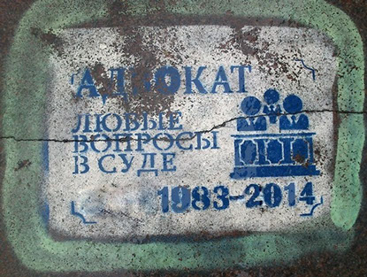

осторожно, консалтинг!
В течении пары недель случилось мне побывать на двух встречах, на первый взгляд абсолютно не связанных между собой.
Нумер Уно.
Я отслеживаю вакансии с соответствующих порталов по ключевому слову “государственный”. Никаких материальных дивидендов мне это давно не приносит, зато даёт кучу информации для размышления.
Вакансия:
Юрист по государственным контрактам в группе строительных компаний.
Отдельной строкой “Знание программы Microsoft World” (да-да именно WORLD=))
в остальном всё стандартно, а возможность работать удалённо это вообще "Рыба моей мечты".
Меня подозрительно быстро пригласили на собеседование. Я конечно приписываю это своему блестящему резюме, но на самом деле всё несколько иначе.
Место:
Широко известная в Питере клоака под названием “Красный Треугольник”. Это бывший советский завод по производству резиновых сапог. Огромная территория заброшенных корпусов из красного кирпича.
В данный момент идеально подходит под отрезание пальцев у проворовавшихся наркокурьеров и съёмки постапокалиптических триллеров в духе “Ходячих мертвецов”.
Но, поскольку рашенский бизнес живучее любых зомби, то там разрослось не поддающееся никакому учёту, адовое скопление самых дешёвых офисов в городе. Настолько дешёвых, что это даже отбивает содержание референта, который как попугай объясняет по телефону как пройти через этот Gangsta's Paradise к корпусу номер 71 (!).
В офисе:
Мне предсказуемо дали заполнять анкету на трёх листах. Это тема давно вызывает стойкое раздражение. Кадровик либо не в состоянии распечатать резюме с сайта, либо наивно верит что я укажу две судимости и употребление героина во вредных привычках. Бумажная анкета сразу выдаёт, что менеджер по персоналу на самом деле унылый советский завхоз, для которого люди = бумажки.
С соответствующим ситуации кислым лицом, в графе “чем бы вы не хотели заниматься” я написал: “заполнять анкеты”, спровоцировав этим такое же выражение лица у интервьюера, чем остался премного доволен =)).
Собеседник:
Деловая дама сразу рассказала, что их интересует конкретное дело об отказе в приёмке и оплате произведённых работ (расклад подкупает новизной).
Поболтав о моём видении этого уникального кейса я таки дождался визитки, на которой не без удивления прочёл: “консалтинг и право”...(да-да, никаких тебе строительных компаний)
Суть:
Эта самая дама получив (услышав в курилке) заказ у знакомых строителей решила устроить смотр идей и персон, что бы прикинуть ценник, а потом перепродать всю работу самому дешёвому рабу, а себе забрать сладкую маржу за “руководство”. То бишь “от-консалтить” меня.
Выходя из офиса, я увидел на том же месте ещё двоих претендентов на “дистанционную” “работу” “юристом” с “группой” “компаний” , с теми же унылыми лицами заполняющих те же унылые анкетки.
Такие пересечения кандидатов недопустимы с точки зрения цивильного подбора персонала, но на Красном Треугольнике братва не заморачивается.
Само собой, ни один уважающий себя специалист работать с такими клиентами не будет, а будет только голодный и готовый на всё дилетант-”универсал”.

Нумер Дос.
Место: Мне посчастливилось быть вхожим в одну уютную Питерскую коммуну, где живут творческие и открытые люди. Помимо жилых комнат у них есть большая гостиная где проводятся всякие разные интересные встречи и мероприятия.
Собеседник:
Очаровательная девушка из ивент-агенства пригласила желающих принять участие в мозговом штурме на тему реальных кейсов из их практики.
Суть:
Развалившись в кресле с чаем и чизкейками, заботливо испечённым хозяйкой вечера мы в игровой форме набрасывали идеи организации корпоративов и рекламных кампаний, шутили и общались.
Итог:
У всех остались исключительно позитивные эмоции, организатор может легко повторить этот опыт.
Мораль.
Если ты хочешь:
забесплатно “по-консалтить” людей, пробрейнстормить свою идею,
закинуть удочку, прощупать почву, пробить ценник -
делай это мягко (не нарушая сна=)) :
проводи встречи в приятной обстановке,
не обманывай относительно своего статуса и целей,
не заставляй заниматься бюрократией,
не сталкивай лбами,
и не забудь приготовить чизкейки.